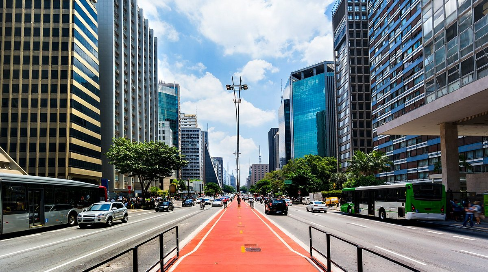

São Paulo, capital do estado homônimo, é o maior centro urbano do Brasil e um dos mais importantes do mundo. Fundada em 1554 por padres jesuítas, cresceu com ciclos econômicos como o café e a industrialização, tornando-se um centro cultural marcado pela diversidade de povos e tradições.
Reconhecida como cidade inteligente, investe em mobilidade urbana, monitoramento do trânsito, iluminação eficiente e digitalização de serviços. É também um polo de startups, centros de pesquisa e eventos internacionais.
Vibrante e diversa, São Paulo oferece museus, teatros, parques, bairros temáticos e uma gastronomia rica que reflete sua pluralidade cultural, atraindo visitantes do mundo inteiro.
• Avenida Paulista – Um dos cartões-postais mais famosos, com centros culturais, shoppings, cafés e vida noturna agitada.
• Parque Ibirapuera – Ícone do lazer paulistano, com áreas verdes, museus e espaço para atividades ao ar livre.
• MASP (Museu de Arte de São Paulo) – Arquitetura icônica e um dos acervos mais importantes da América Latina.
• Mercado Municipal – Famoso pela gastronomia, com destaque para o sanduíche de mortadela e o pastel de bacalhau.
• Bairro da Liberdade – Centro da cultura japonesa no Brasil, com lojas, festivais e culinária típica.

Retorne a Página Anterior